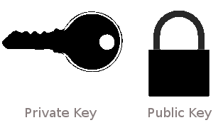
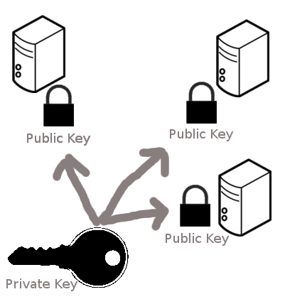

Introduction to version control with Git and GitHub
Lecture objectives
- Implement SSH authentication
- Differentiate between the use of GitHub as a remote hosting service for version control and Git as a version control system.
- Create a Git repository.
- Implement Git’s clone, add, status, commit, pull, and push operations on the command line and their equivalent use in VS Code.
- Understand what implies using the staging area in a Git workflow.
- Recognize the commit as the primary building block for storing a project version characterized by an attached message and a hash that serves as a unique identifier.
Why version control?

source: “Piled Higher and Deeper” by Jorge Cham, http://www.phdcomics.com
To version control a project, you generally need two things: (1) a version control system and (2) a repository hosting service.
The version control system is the software responsible for tracking changes, sharing changes you make with others, obtaining changes from others, and resolving conflicting edits. The repository hosting service is responsible for storing a copy of the version-controlled project online (a repository), where you and your collaborators can access it remotely, discuss issues and bugs, and distribute your final product. For both of these items, there is a wide variety of choices. In this textbook we’ll use Git for version control, and GitHub for repository hosting, because both are currently the most widely used platforms.
Technically you don’t have to use a repository hosting service. You can, for example, version control a project that is stored only in a folder on your computer—never sharing it on a repository hosting service. But using a repository hosting service provides a few big benefits, including managing collaborator access permissions, tools to discuss and track bugs, and the ability to have external collaborators contribute work, not to mention the safety of having your work backed up in the cloud. Since most repository hosting services now offer free accounts, there are not many situations in which you wouldn’t want to use one for your project.
Set up keys for SSH for use with GitHub
Remotely accessing another computer using SSH
Let’s start with some definitions:
Definitions
Secure SHell (SSH) - a common method for remote login to another computer which is secure.
server - a machine you are SSHing into. The server sits and waits to be contacted.
client - usually your machine. The client initiates contact with the server.
Review - password-based authentication
- Passwords are short and tend to be somewhat easy to “break” (guess).
- Say your password contains 12 characters
- each character is one of 26 uppercase letters, 26 lowercase letters, 10 digits, or ~10 special characters
- total probably around ~70 possibilities per character, so \(70^{12}\approx 10^{22}\)
- This is a HUGE number, except that there are patterns within passwords that make them easier to guess
- More on security and privacy in future courses
SSH key-based authentication
Two components:
- public key
- private key
These files have an asymmetrical relationship:
- the public key CANNOT decrypt messages generated by the private key
- the private key CAN decrypt messages generated by the public key
Understanding public key private key concepts
- Think of a public key, not as a key, but as a padlock that you can make copies of and put anywhere you want.
- To put your ‘padlock’ on an another machine, you would copy it to
authorized_keysin the~/.sshfolder. - Think of a private key as an actual key, it can open the padlock that is stored on the other machine.

source: http://blakesmith.me/2010/02/08/understanding-public-key-private-key-concepts.html
You can put your lock at many places
As long as you are using the same lock (public key), you will be able to open it with the same private key.
 source: http://blakesmith.me/2010/02/08/understanding-public-key-private-key-concepts.html
How the lock works
- Keys are generated using
ssh-keygen, to make private key (usually calledid_rsa) and a public key (usually calledid_rsa.pub) - You can make copies of
id_rsa.pub(public key/padlock) and distribute them to other machines - The other machine uses the public key to encrypt a challenge message to you
- You need to show that you can decrypt the message to demonstrate that you are in possesion of the associated private key
Why SSH keys over passwords
SSH keys use the RSA cryptosystem
The private key is much longer than a password. A standard now is 4096-bit keys, which means \(> 10^{1200}\) possibilities. This makes it harder for a hacker to break (guess) the password. More on this when we discuss binary numbers next week.
Aside: Quantum computers will be able to break RSA encryption. It is very hard to predict whether this is years or decades away.
Keeping your private key safe
ssh-keygenallows you to put a password or passphrase on the private key- this should be shared with NO ONE!
- if your private key does fall into the wrong hands, the person must still know the password or passphrase to use the private key
 source - https://xkcd.com/936/
source - https://xkcd.com/936/
Different type of keys
There may be different methods of how to generate private-public key pairs.
The GitHub SSH key generation instructions uses the -t flag to indicate the “type” of key to create, in thier instructions they use the ed25519 algorithm to create private and public values.
The general premice to SSH keys is the same, there is a private key that stays on your machine and is never shared with other people, and the public key you can freely share that will be used to authenticate the machine with the private key on it.
Authentication vs. encryption
- The system described above is purely for authentication
- the client needs to prove to the server that the client is authorized to access the server
- Someone with authority has put the public key in
~/.ssh/authorized_keyson the server - The server now grants access to anyone possessing a private key matching one of these public keys
- This is separate from encryption of the data flowing between the client and server.
- This prevents eavesdroppers from listening to client-server communications
Lecture 2 Activity 1
Creating a Repository
We can create a repository one of two ways:
- Start on GitHub and then clone the repository to your local computer using Git.
- Start in a folder on your local computer, use Git to initialize it as a Git repository (by typing
git initinside the directory). Then create a new repository on GitHub without adding any files. Then use Git to tell your local computer where the remote is (i.e., the location of the empty GitHub repository on GitHub).
You can see the second method requires more work. So the first method is usually the most convenient and it is sufficient for you to only use this approach.
Lecture 2 Activity 1
Check that your cloned repo it is a Git repository. How can you check that you are working on a Git repository?
Is a repository the same as a directory? Can be a Git repository your current working directory?
Cloning repositories from GitHub
- If you only have minor edits to perform, you don’t need to clone and can edit files directly on GitHub via their online editor.
- However, if you want to be able to run the code on your own machine, and modify it there, we need to “clone” the repository.
- To clone it:
- go into the repository
- click on the green “Clone or download” button (make sure the pop-up says “Clone with HTTPS”)
- note - we will learn to use SSH authentication later…
- copy the URL to the clipboard
- open Bash on your laptop
- navigate to the directory you want to clone into by using the
cdcommand. - type
git clonefollowed by the URL, e.g.git clone https://github.com/github_username/repository_name.git, and press enter. - Once the download has finished you can use
cdto navigate into the directory you just clones andlsto confirm that the content is the same as you saw online.
For more details, see Github’s docs on cloning.
Be Careful: do not nest git repositoies. That is, there should not be one git repository inside another git repositoiry. Be careful that when you are using git clone (or git init
Creating a repository from GitHub (method 1 above)
I recommend that you follow along with these steps on your own machine to practice the commands as you are reading about them. If it is sometimes unclear where to click or what the output should look like from a command, refer to the corresponding sections of the videos to see exactly what to do (The git workflow one and the ones from lecture 2). You can create however many repositories on GitHub that you would like and remove them after, so you don’t need to worry about experimenting and creating several new ones.
Steps to follow:
Go to https://github.ubc.ca and make sure you are logged in.
Click green “New repository” button. Or, if you are on your own profile page, click on “Repositories”, then click the green “New” button.
Enter a repository name
- Choose between a public or private repo.
- If you choose public, anyone can see and clone you repo (but it is still only you that can push to it).
- Check “Initialize this repository with a README”
- This makes it possible to clone the repo without adding a file manually later.
- Choose between a public or private repo.
Click big green button “Create repository”.
That’s it! You now have a new repository on GitHub!
What is a Git repository?
A Git repository stores all the necessary information for version control your project in a hidden folder called .git. If you want to know if you are working in a Git repo using the terminal you can use the bash command ls -a as you can see in the image. The -a flag will include into the lists of files displayed on the terminal the hidden folders. If .git is included you are working in a Git repository.
By cloning a repository from GitHub to your computer, you are automatically getting a copy of .git and thus, working on a Git.
Adding & committing changes to version controlled files
There are two ways to make changes to your files in the remote repo on GitHub:
- Edit files directly on Github via the web interface.
- Note that there is no step for adding to the staging area on GitHub. This gives less flexibility, but is convenient when working via the web interface where you probably only are making small changes.
- Make changes on files you have cloned locally to your computer,
addthem to the staging area,commitand thenpushthe changes up to Github.
Let’s try out method 1 by editing the file called README.md that contains some basic information.
Steps to follow:
Click on the
README.mdfile link in your repo on GitHub.Click on the pen tool (right-hand side of document)
Add your name as the author to the document (e.g., “author: Roald Dahl”)
Provide a commit message (e.g. “Add author info”).
Click on the big green button “Commit changes” to save your work (this is essentially
git add+git commitin one click).Download this repo to your local computer by cloning it (
git clone+ the remote’s URL)
Changing and saving version controlled files
To make a change to a file inside a Git repository, edit it as you would with any other local file, e.g.
code name-of-file.txt.Once you have made changes to a file in a local Git repository (such as on your laptop), you need to tell Git that you want to record these changes in the version history.
This is a two step process where you first add the changes to the stanging area and then committ them, which saves the differences between the current and previous version of the file together with your message describing what you did.
- These changes are saved in the hidden
.gitdirectory in the Git repository.
- These changes are saved in the hidden
This is what it looks like when adding and committing:
- Add changes to staging area
git add file-name(s)- Commit the changes together with a descriptive message
git commit -m "Clarify the README installation instructions"
For more details, see Software Carpentry’s lesson on tracking local changes with Git.
What is the staging area, and why is it there?

Once you reach a point that you want Git to keep a record of the current version of your work, you need to commit (i.e., snapshot) your changes. A prerequisite to this is telling Git which files should be included in that snapshot. We call this step adding the files to the staging area.
Note that the staging area is not a real physical location on your computer; it is instead a conceptual placeholder for these files until they are committed. The benefit of the Git version control system using a staging area is that you can choose to commit changes in only certain files. For example, we add only the two files that are important to the analysis project (analysis.ipynb and README.md) and not our personal scratch notes for the project (notes.txt).
The staging area allows more control over what you are about to commit, allowing you to commit parts of a file or multiple files together with a single descriptive message. To add parts of a file instead of everything type git add -p and then interactively choose which parts you want by typing either n (no) or y (yes) followed by pressing enter for each chunk of code. This workflow is great for reviewing the changes as you add them to the staging area, which ensures you don’t commit anything by mistake. Note that you must omit-p when adding new files, so you would type git add <filename>.
Commands
To add all updated, new, and deleted files in the git repo you can type git add --all. To only add all updated and new files in the git repo you can type git add .. To only add all updated and deleted files in the git repo you can type git add -u, this is very useful.
To see which files you have staged, before committing them, you can use git status. To see the exact changes you have staged instead of just the file names, use git diff --staged. Finally, if you change your mind and want to removea file from the staging area, you can type git restore --staged name-of-your-file.txt
Commit your files
To include a description in your commit using the terminal, you should write the command git commit and press ENTER. After doing that, a file called COMMIT_EDITMSG will open in your editor. There you can write the title and body of the commit message that you want to associate with your changes.
Push local changes to GitHub
Once you have committed, you changes are saved locally on your laptop. To also upload them to GitHub, you need to “push” the changes to Github. Since you cloned an online repository at the beginning, git knowed that you want to push you changes to that location by default, and you can do so by typing git push without specifyin a URL.
For more details, see Github’s doc on pushing changes to Github.
Always verify that your assignments were uploaded by viewing the online repo!
Pull your changes from a remote repository
Changes pushed by collaborators, or created directly on GitHub will not be automatically sent to your local repository.
If you are working on a project with collaborators, they will also be making changes to files (e.g., to the analysis code in a Jupyter notebook and the project’s README file), committing them to their own local repository, and pushing their commits to the remote GitHub repository to share them with you. When they push their changes, those changes will only initially exist in the remote GitHub repository and not in your local repository.
To obtain the new changes from the remote repository on GitHub, you will need to pull those changes to your own local repository. By pulling changes, you synchronize your local repository to what is present on GitHub. Additionally, until you pull changes from the remote repository, you will not be able to push any more changes yourself (though you will still be able to work and make commits in your own local repository)
If you want to do this with the terminal, you have to pull from the terminal you should use the command git pull.
Lecture 2 Exercise 2
Let’s access your own GitHub home for MDS. There you can find the links for all the courses’ repositories, as well as, the labs’ repositories. Your home is located at:
https://github.ubc.ca/MDS-2021-22/yourCWL_home
where yourCWL should be replaced by your CWL.
(Hint: you might want to bookmark this page as it gives you easy access to all relevant courses’ repositories).
Lecture 2 Exercise 2
- Create a new repository at GitHub.com and choose to add a README file in this process.
- Clone this repository (note that you will need to change your username on your computer if you use a different one than for GitHub.ubc.ca).
- Make changes to the README.
- Add and commit your changes
- Create a new file, add and commit it
- Push your previous changes to GitHub and confirm that they are there.
Attribution
- Happy Git and GitHub for the useR by Jenny Bryan and the STAT 545 TAs
- Software Carpentry, specifically the Unix Shell and Git lessons